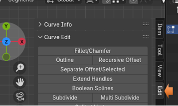

~Title Here~
10/6/2025
If you did it correctly, your shape should look like this. If not, just go back to where you duplicated the curve, and try the S, X, -1 again.

We need to do this in a certain way, or we could lose all of the assignments that we made to the handles. We do not want to lose what we set up, so we will preform this next part like this.

We could simply come in here and select. Join Splines and then hit the button under it that says Join Neighboring Splines, but that will change all of our handles to the handle type of Align, and that is not what we want. So, try and follow along here.